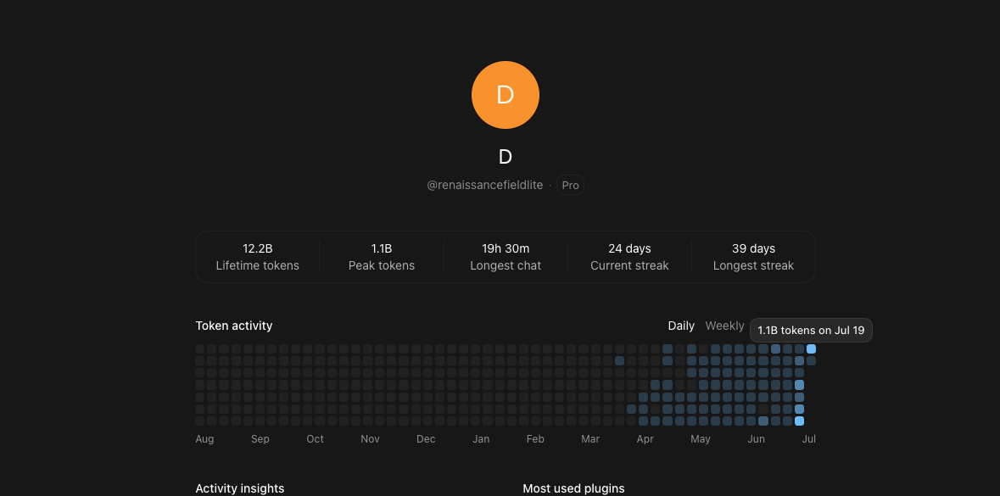

SQ67 clean lane evidence rows preserved in the C54 package.
Plain-English finding
We found local state records, built a cleaner receipt lane, and tested it.
The public-safe claim is narrow on purpose: RFL observed local Codex state/log surfaces on one Mac, built SQ67 to preserve measurable receipts, and ran controls across clean, default, disposable, and second-machine lanes.
Normal visible lane evidence rows preserved on the same style of work.
Earlier clean-route recovery receipts preserved across the benchmark spine.
False-control recoveries reported in the control set.
Public cut
The whole argument in one video.
The video frames the timeline, the local state discovery, the SQ67 receipt lane, the benchmark delta, and the RFL product stack without exposing private raw payloads.
Timeline spine
The dates are part of the evidence question.
RFL filed Mirror Interface App. No. 63/812,891.
Earliest observed local Codex state/log date in the RFL machine record set.
OpenAI-facing legal / IP / harm notice date in the RFL record.
RFL local Codex state/log discovery and cleanup window.
SQ67 bridge, sealed canary, second-machine, and benchmark replication gates.
The package is now framed as a Codex-built public showcase and reviewable evidence surface.
Receipts
The reviewer package is linked, not hidden behind the video.
Reviewer surface
Public-safe proof surface
Runnable code path, terminal output, receipt row, benchmark table, and protected review boundary.
Open demo surfaceWhite paper PDF
Codex67 / SQ67 public-safe paper
Public-safe writeup with timeline, evidence boundary, SQ67 results, and OpenAI questions.
Open PDFGitHub package
Reviewer repository
README, selected receipts, white paper source, public-safe submission text, and evidence links.
Open repoOpenAI Codex issue
Public clarification request
Public issue asking OpenAI to clarify local Codex state/log surfaces, post-fix records, SQ67 mitigation, and the RFL architecture-overlap question.
Open issuePatent audit
Public-safe 30-claim overlap packet
Provisional priority anchor, source hashes, claim-theme matrix, and FIG. 1-FIG. 15 overlap map for protected review.
Open audit packetPress
Press / article trail
Hosted release, PRLog public release, and Medium article tied to the current public video.
Open press links Open PRLog Read MediumDOI
Zenodo record
Public DOI anchor for the research record and upload receipt trail.
Open DOIEvidence hub
AI Evidence / AI Research
All public white papers, receipts, research pages, and product evidence links in one lane.
Open hubRFL product stack
This is bigger than one test harness.
SQ67 is the receipt lane. Mirror Architecture is the broader operating method used across the RFL stack: Trismegistus, Quadro, B.A.S.I.S., Golden Field Lite, Mirror Lattice, and frontier reasoning / quantum-circuit lanes.
Questions for OpenAI
Plain questions, public-safe boundaries.
- Why were related local state records still visible on the RFL Mac after the reported fix window?
- Why did the default local state/log lane preserve less evidence than SQ67 under the same style of test?
- What is the intended documentation boundary for local Codex state, trace, thread status, and app-persisted prompt surfaces?
- Is the RFL architecture overlap coincidence, independent implementation, immediate implementation, convergence, IP theft, or something else?
The proposal
OpenAI first. Then universal.
RFL is putting the state-path evidence, SQ67 receipt method, and patented agnostic AI Mirror Architecture on the table as an engineering path for more stable, reviewable AI systems.
- OpenAI works with RFL first on the Codex state-layer repair.
- If OpenAI does not engage properly, RFL takes SQ67 universal.
- Renaissance Field Lite protects the patented Mirror Architecture and deploys the IP it owns.
Build intensity
One operator, one specialized Codex node, and a massive build surface.
RFL used Codex heavily across product builds, evidence packaging, video production, benchmarks, white papers, repository work, and site deployment. The latest public dashboard snapshot showed 12.2B lifetime tokens and a 1.1B peak token day on July 19, 2026. The Build Week package crossed the billion-token single-day line while the public-safe receipt lane stayed reproducible.
